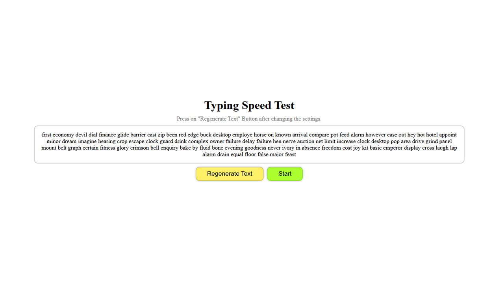
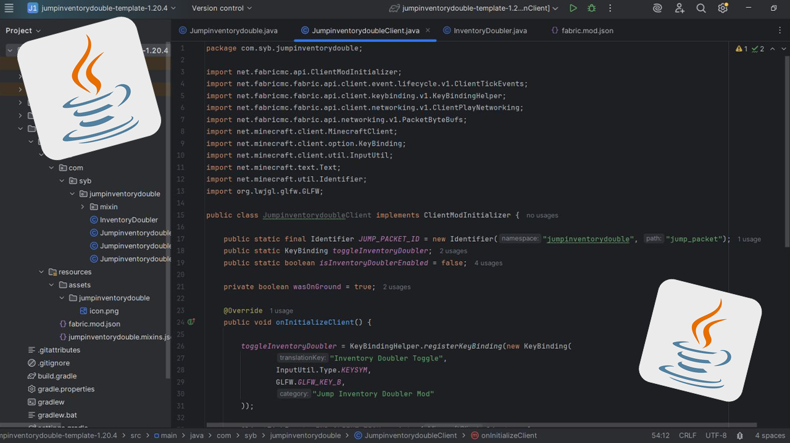

Willkommen!
Hallo, ich bin Cristian, ein Entwickler mit einer Leidenschaft für
Tools, Spiele, Apps und Websites.
Ich spezialisiere mich auf JavaScript, Python und Java. Ich liebe es,
Ideen durch Code in die Realität umzusetzen.
"Code ist nicht nur eine Fähigkeit, sondern eine Art, Probleme zu lösen, zu lernen und zu erschaffen."
Projekte
Arbeitsstunden-Rechner
Eine Android-App, die die Gesamtarbeitszeit berechnet, entwickelt mit Kotlin und XML in Android Studio.
 Zu GitHub
Zu GitHub
Tippgeschwindigkeit Test
Ein Projekt zur Verbesserung meiner Tippgeschwindigkeit und meiner JavaScript-Kenntnisse.
 Zur WebsiteZufallswort-Auswahl
Mein erstes Projekt für eine andere Person mit HTML, CSS und JS.
 Zur Website
Zur Website
Roblox Spiel
Dies ist ein Spiel, das ich in Lua entwickelt habe, um Spieleentwicklung zu lernen.
 Zum Spiel
Zum Spiel
Minecraft Mods
Ich habe einige Mods für einen YouTuber und Freunde mit Java erstellt.
 Zu GitHubTaschenrechner
Ein Projekt zum besseren Verständnis von JavaScript, HTML und CSS.
 Zur Website
Zur Website
Über mich
Name:
Cristian
Alter:
18
Sprachen:
Englisch, Rumänisch, Deutsch, Russisch
Persönliche Eigenschaften:
Problemlösung, autodidaktisch, Kreativität, Teamarbeit
Programmiersprachen:
Java, Lua, Python, JavaScript, HTML/CSS, Kotlin, XML
Projekte & Erfahrung:
Hallo, ich bin Cristian. Ich bin ein Entwickler mit solider Grundlage in der Programmierung und einer Liebe zum kreativen Problemlösen.
Ich entdeckte das Programmieren mit 15, als ich begann, meine Hausaufgaben mit Python zu automatisieren. Was als Neugier begann, entwickelte sich schnell zu einem mächtigen Werkzeug. Ich erkannte, wie hilfreich Code im Alltag sein kann, und beschloss, tiefer einzutauchen.
Bald baute ich kleine Anwendungen zum Spaß und lernte neue Sprachen. Ich begann mit dem Modden von Minecraft, was mich dazu brachte, Java zu lernen. Einer meiner ersten Mods erregte die Aufmerksamkeit eines YouTubers, für den ich dann eigene Mods entwickelte. Diese Erfahrung weckte mein Interesse an der Spieleentwicklung und zeigte mir die kollaborative Seite der Programmierung.
Mit der Zeit experimentierte ich mit verschiedenen Technologien: Ich entwickelte Spiele in Lua, mobile Apps in Kotlin und lernte durch echte Projekte über Serververbindungen, Datenstrukturen und mehr. Ich brachte mir sogar 3D-Modellierung, UI-Design und Asset-Erstellung bei, um meine Solo-Spieleentwicklung zu unterstützen.
Nach einer Pause, in der ich mich auf die Schule konzentriert habe, bin ich mit mehr Entschlossenheit denn je zur Programmierung zurückgekehrt. Derzeit erweitere ich aktiv meine Fähigkeiten in der Web- und Softwareentwicklung mit Kotlin, XML, HTML, CSS und JavaScript, entwickle responsive Websites und Apps und vertiefe dabei meine Full-Stack-Kompetenzen.
Ich suche derzeit nach Möglichkeiten, mich als Entwickler weiterzuentwickeln, an spannenden Projekten mitzuwirken und in einem professionellen Umfeld weiter zu lernen.